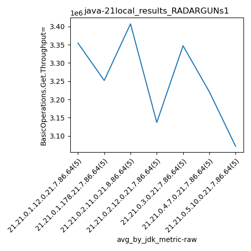
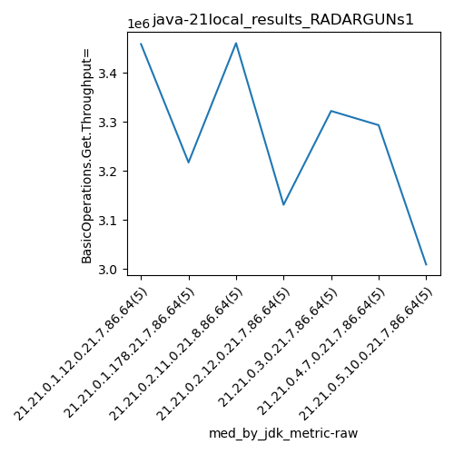
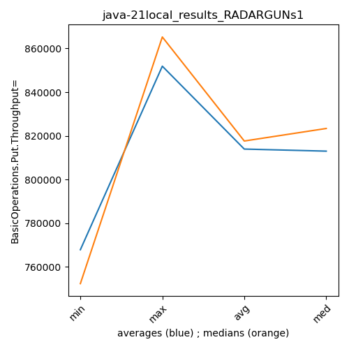

java-21 RADARGUNs1
Context at bottom
/home/jvanek/git/benchmarks-in-nested-virtualisation-toolchain/final_results/local_results/local_results_J2DBENCH
java-21
RADARGUNs1
/home/jvanek/git/benchmarks-in-nested-virtualisation-toolchain/final_results/local_results/local_results_SPECJBB
java-21
RADARGUNs1
/home/jvanek/git/benchmarks-in-nested-virtualisation-toolchain/final_results/local_results/local_results_RADARGUNs1
java-21
RADARGUNs1
local_results_RADARGUNs1
- local_results_RADARGUNs1 - throughput get
- local_results_RADARGUNs1 - throughput put
- local_results_RADARGUNs1 - response mean time get
- local_results_RADARGUNs1 - response mean time put
local_results_RADARGUNs1 - throughput get
Expected number of java-21 JDKs: 7
1st avgmed_alljdks_metric:
/home/jvanek/git/benchmarks-in-nested-virtualisation-toolchain/final_results/result_processing.py /home/jvanek/git/benchmarks-in-nested-virtualisation-toolchain/final_results/local_results/local_results_RADARGUNs1 BasicOperations.Get.Throughput= False
values: [3458974, 3495524, 3483114, 3156616, 3179438, 3459629, 3217557, 3427214, 3018942, 3136723, 3470174, 3460878, 3452814, 3479726, 3173753, 3198840, 3099523, 3190100, 3064212, 3131257, 3272934, 3424032, 3414964, 3302189, 3322538, 3102040, 3383394, 3293649, 3349287, 2976709, 2956977, 3085376, 3009432, 3001245, 3304502]

Expected number of iterations: 5
final number of values: 35 out of 35
Pass rate: 100.0%
values: (2956977, 3495524, 3255836.4571428574, 3272934)

** accuracy from all jdks and runs
more is better
MIN: 2956977
MAX: 3495524
AVG: 3255836.4571428574
MED: 3272934
Relative differences 1:
MIN-MAX: 15.0 %
MIN-AVG: 9.0 %
MIN-MED: 10.0 %
MAX-MIN: -18.0 %
MAX-AVG: -7.0 %
MAX-MED: -7.0 %
AVG-MED: 1.0 %
stored to java-21.properties. sort | uniq that!
2nd avgmed_by_jdk_metric:
values: [3354733.2, 3252013.0, 3407469.0, 3136786.4, 3347331.4, 3221015.8, 3071506.4]

values: [3458974, 3217557, 3460878, 3131257, 3322538, 3293649, 3009432]

values: (3071506.4, 3407469.0, 3255836.457142857, 3252013.0)
values: (3009432, 3460878, 3270612.1428571427, 3293649)

** accuracy from all jdks where runs were avged
more is better
MIN: 3071506.4
MAX: 3407469.0
AVG: 3255836.457142857
MED: 3252013.0
Relative differences 1:
MIN-MAX: 10.0 %
MIN-AVG: 6.0 %
MIN-MED: 6.0 %
MAX-MIN: -11.0 %
MAX-AVG: -5.0 %
MAX-MED: -5.0 %
AVG-MED: -0.0 %
stored to java-21.properties. sort | uniq that!
** accuracy from all jdks where runs were medianed
more is better
MIN: 3009432
MAX: 3460878
AVG: 3270612.1428571427
MED: 3293649
Relative differences 1:
MIN-MAX: 13.0 %
MIN-AVG: 8.0 %
MIN-MED: 9.0 %
MAX-MIN: -15.0 %
MAX-AVG: -6.0 %
MAX-MED: -5.0 %
AVG-MED: 1.0 %
stored to java-21.properties. sort | uniq that!
local_results_RADARGUNs1 - throughput put
Expected number of java-21 JDKs: 7
1st avgmed_alljdks_metric:
/home/jvanek/git/benchmarks-in-nested-virtualisation-toolchain/final_results/result_processing.py /home/jvanek/git/benchmarks-in-nested-virtualisation-toolchain/final_results/local_results/local_results_RADARGUNs1 BasicOperations.Put.Throughput= False
values: [864756, 873889, 870746, 789122, 794942, 864935, 804356, 856839, 754687, 784233, 867570, 865255, 863220, 869916, 793477, 799745, 774814, 797492, 766044, 782787, 818295, 856031, 853676, 825521, 830592, 775501, 845886, 823383, 837254, 744165, 739227, 771339, 752370, 750357, 826138]

Expected number of iterations: 5
final number of values: 35 out of 35
Pass rate: 100.0%
values: (739227, 873889, 813958.8571428572, 818295)

** accuracy from all jdks and runs
more is better
MIN: 739227
MAX: 873889
AVG: 813958.8571428572
MED: 818295
Relative differences 1:
MIN-MAX: 15.0 %
MIN-AVG: 9.0 %
MIN-MED: 10.0 %
MAX-MIN: -18.0 %
MAX-AVG: -7.0 %
MAX-MED: -7.0 %
AVG-MED: 1.0 %
stored to java-21.properties. sort | uniq that!
2nd avgmed_by_jdk_metric:
values: [838691.0, 813010.0, 851887.6, 784176.4, 836823.0, 805237.8, 767886.2]
values: [864756, 804356, 865255, 782787, 830592, 823383, 752370]

values: (767886.2, 851887.6, 813958.8571428572, 813010.0)
values: (752370, 865255, 817642.7142857143, 823383)

** accuracy from all jdks where runs were avged
more is better
MIN: 767886.2
MAX: 851887.6
AVG: 813958.8571428572
MED: 813010.0
Relative differences 1:
MIN-MAX: 10.0 %
MIN-AVG: 6.0 %
MIN-MED: 6.0 %
MAX-MIN: -11.0 %
MAX-AVG: -5.0 %
MAX-MED: -5.0 %
AVG-MED: -0.0 %
stored to java-21.properties. sort | uniq that!
** accuracy from all jdks where runs were medianed
more is better
MIN: 752370
MAX: 865255
AVG: 817642.7142857143
MED: 823383
Relative differences 1:
MIN-MAX: 13.0 %
MIN-AVG: 8.0 %
MIN-MED: 9.0 %
MAX-MIN: -15.0 %
MAX-AVG: -6.0 %
MAX-MED: -5.0 %
AVG-MED: 1.0 %
stored to java-21.properties. sort | uniq that!
local_results_RADARGUNs1 - response mean time get
Expected number of java-21 JDKs: 7
1st avgmed_alljdks_metric:
/home/jvanek/git/benchmarks-in-nested-virtualisation-toolchain/final_results/result_processing.py /home/jvanek/git/benchmarks-in-nested-virtualisation-toolchain/final_results/local_results/local_results_RADARGUNs1 BasicOperations.Get.ResponseTimeMean True
values: [1070, 1038, 1049, 1066, 1052, 1068, 1092, 1093, 1130, 1106, 1048, 1041, 1063, 1046, 1062, 1043, 1082, 1051, 1080, 1090, 1115, 1080, 1084, 1070, 1094, 1122, 1066, 1104, 1108, 1130, 1134, 1122, 1111, 1111, 1128]

Expected number of iterations: 5
final number of values: 35 out of 35
Pass rate: 100.0%
values: (1038, 1134, 1084.2571428571428, 1082)

** accuracy from all jdks and runs
more is worse
MIN: 1134
MAX: 1038
AVG: 1084.2571428571428
MED: 1082
Relative differences 1:
MIN-MAX: 9.0 %
MIN-AVG: 5.0 %
MIN-MED: 5.0 %
MAX-MIN: -8.0 %
MAX-AVG: -4.0 %
MAX-MED: -4.0 %
AVG-MED: 0.0 %
stored to java-21.properties. sort | uniq that!
2nd avgmed_by_jdk_metric:
values: [1055.0, 1097.8, 1052.0, 1069.2, 1088.6, 1106.0, 1121.2]

values: [1052, 1093, 1048, 1080, 1084, 1108, 1122]

values: (1052.0, 1121.2, 1084.257142857143, 1088.6)
values: (1048, 1122, 1083.857142857143, 1084)

** accuracy from all jdks where runs were avged
more is worse
MIN: 1121.2
MAX: 1052.0
AVG: 1084.257142857143
MED: 1088.6
Relative differences 1:
MIN-MAX: 7.0 %
MIN-AVG: 3.0 %
MIN-MED: 3.0 %
MAX-MIN: -6.0 %
MAX-AVG: -3.0 %
MAX-MED: -3.0 %
AVG-MED: -0.0 %
stored to java-21.properties. sort | uniq that!
** accuracy from all jdks where runs were medianed
more is worse
MIN: 1122
MAX: 1048
AVG: 1083.857142857143
MED: 1084
Relative differences 1:
MIN-MAX: 7.0 %
MIN-AVG: 4.0 %
MIN-MED: 4.0 %
MAX-MIN: -7.0 %
MAX-AVG: -3.0 %
MAX-MED: -3.0 %
AVG-MED: -0.0 %
stored to java-21.properties. sort | uniq that!
local_results_RADARGUNs1 - response mean time put
Expected number of java-21 JDKs: 7
1st avgmed_alljdks_metric:
/home/jvanek/git/benchmarks-in-nested-virtualisation-toolchain/final_results/result_processing.py /home/jvanek/git/benchmarks-in-nested-virtualisation-toolchain/final_results/local_results/local_results_RADARGUNs1 BasicOperations.Put.ResponseTimeMean True
values: [3837, 3836, 3881, 3799, 3793, 3863, 3823, 3838, 3749, 3851, 3853, 3811, 3800, 3798, 3861, 3715, 3866, 3791, 3796, 3749, 3882, 3948, 3963, 3944, 3814, 3913, 3921, 3923, 3900, 3909, 4051, 4077, 4019, 3951, 4142]

Expected number of iterations: 5
final number of values: 35 out of 35
Pass rate: 100.0%
values: (3715, 4142, 3876.2, 3861)

** accuracy from all jdks and runs
more is worse
MIN: 4142
MAX: 3715
AVG: 3876.2
MED: 3861
Relative differences 1:
MIN-MAX: 11.0 %
MIN-AVG: 7.0 %
MIN-MED: 7.0 %
MAX-MIN: -10.0 %
MAX-AVG: -4.0 %
MAX-MED: -4.0 %
AVG-MED: 0.0 %
stored to java-21.properties. sort | uniq that!
2nd avgmed_by_jdk_metric:
values: [3829.2, 3824.8, 3824.6, 3783.4, 3910.2, 3913.2, 4048.0]

values: [3836, 3838, 3811, 3791, 3944, 3913, 4051]

values: (3783.4, 4048.0, 3876.2000000000003, 3829.2)
values: (3791, 4051, 3883.4285714285716, 3838)

** accuracy from all jdks where runs were avged
more is worse
MIN: 4048.0
MAX: 3783.4
AVG: 3876.2000000000003
MED: 3829.2
Relative differences 1:
MIN-MAX: 7.0 %
MIN-AVG: 4.0 %
MIN-MED: 6.0 %
MAX-MIN: -7.0 %
MAX-AVG: -2.0 %
MAX-MED: -1.0 %
AVG-MED: 1.0 %
stored to java-21.properties. sort | uniq that!
** accuracy from all jdks where runs were medianed
more is worse
MIN: 4051
MAX: 3791
AVG: 3883.4285714285716
MED: 3838
Relative differences 1:
MIN-MAX: 7.0 %
MIN-AVG: 4.0 %
MIN-MED: 6.0 %
MAX-MIN: -6.0 %
MAX-AVG: -2.0 %
MAX-MED: -1.0 %
AVG-MED: 1.0 %
stored to java-21.properties. sort | uniq that!
/home/jvanek/git/benchmarks-in-nested-virtualisation-toolchain/final_results/local_results/local_results_RADARGUNs3
java-21
RADARGUNs1
/home/jvanek/git/benchmarks-in-nested-virtualisation-toolchain/final_results/local_results/local_results_JMH
java-21
RADARGUNs1
/home/jvanek/git/benchmarks-in-nested-virtualisation-toolchain/final_results/local_results/local_results_DACAPO
java-21
RADARGUNs1
pass rates:
local_results_RADARGUNs1=100.0%
Context:
- local_results
- RADARGUNs1